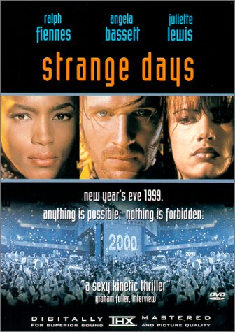

Movie review by : SFAM
Year : 1995
Directed by : Kathryn Bigelow
Written by : James Cameron (story and screenplay) & Jay Cocks (screenplay)
Degree of Cyberpunk visuals : High
Correlation to Cyberpunk themes : High
Rating : 7/10
Key cast members :

Overview: Written by James Cameron, Strange Days is a near-future (now in the past as it takes place the day before Y2K) film noir written that puts the "punk" in cyberpunk. This is truly a great underground ride. Strange days is about a down and out former vice-cop named Lenny (Ralph Fiennes), who's life has long since seen its better days - he now makes his living, such as it is, by selling illegal VR experiences (sexual and high tension experiences) that can damage the brain if played too often. In this "near future", people can capture VR "experiences" by placing a "Jack Thursby-like" thing on their heads (called a Squid) to capture their emotional experience. Ralph wants more than anything else to have his former girlfriend back (played by Juliette Lewis) - who is now in the clutches of a sadistic music producer. During the course of his "practice, Ralph comes upon a data disc that has recorded a murder of a prostitute. Ralph follows the trail, which leads him into the pit of humanity, with seedy scenes, blackmail, murder and rape. Ralph's friend (played by a very hot Angella Bassett) is the voice of reason in this, not to mention an awesome ass-kicker!
The Bottom Line: This movie is really more "punk" than cyber, but it does have enough to matter. Besides the rather simplistic recording of memories, Strange Days gives us a potential view of humanity in decline as technology becomes more and more invasive in our lives. On top of this, the seedy near-future settings are great, and all the lead actors in this are terrific, including Tom Sizemore (Lenny's best friend) and Michael Wincott (the psychopath).
However, I do have to knock one point away due to a 4 year predictive window - in 1995, I cannot imagine anyone thinking that the year 1999 would have resembled anything like this. Yes, Snow Crash had kicked the 3D Virtual Worlds movement into high overdrive, but no, 4 years was way too quick for a prediction such as this.